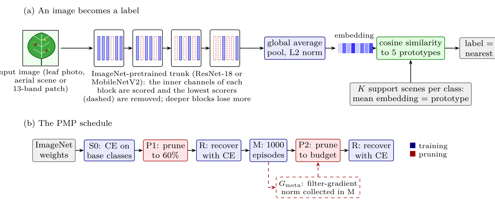
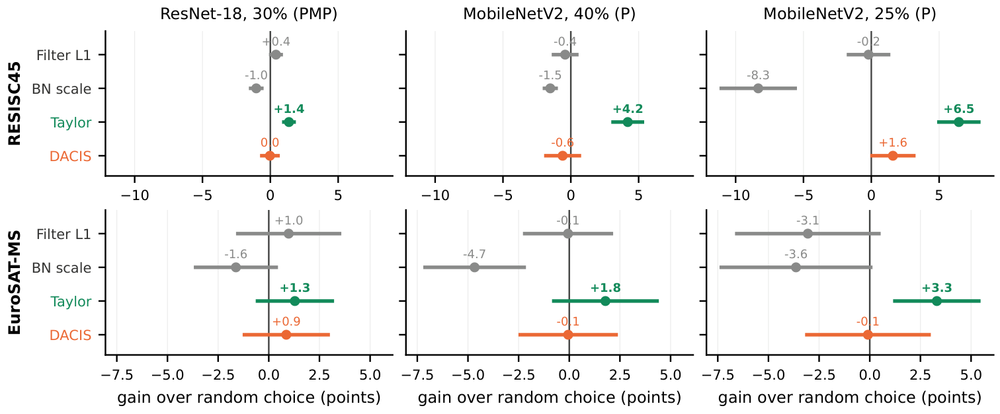
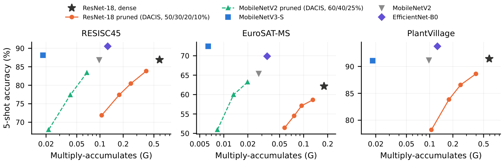

Benchmarking Channel Pruning for Few-Shot Earth Observation
We hold classes out, repeat the class split many times and give every method the same test episodes, then ask which channels of a pretrained network are worth keeping when it must recognise new aerial and Sentinel-2 scene types from a few examples.
Results at a glance
How an image becomes a label
A pretrained trunk (ResNet-18 or MobileNetV2) has its inner channels scored and the lowest scorers removed under one shared depth profile. An image is embedded, normalised, and given the label of the nearest class prototype, the mean embedding of the few labelled support scenes. The PMP schedule below the pipeline is the three-stage prune, meta-train, prune recipe that we re-test.

Which scores beat random choice?
Only the Taylor score does. Each dot is the paired difference to random choice in 5-shot points, with a 95% interval over class partitions; the dashed zero line is random choice. The gap grows with the severity of pruning.

Accuracy against cost
Pruning saves less time than operations, and an unpruned small pretrained network sits above every pruned ResNet-18 at a fraction of the cost.

What we take from it
- Test a small ImageNet-initialised network such as MobileNetV3-Small before pruning anything.
- If a network must be pruned, use the Taylor term, skip the meta stage, and report many class partitions with paired episodes.
- The meta-training stage of the PMP schedule did not raise 5-shot accuracy; schedules that gain are those whose score uses the meta-gradient statistic, and a variant that updates no weight gains as much.
- Not tested: coordinates, dates, radar, full scenes, satellite-pretrained backbones and embedded hardware.
Reproduce
All numbers on this page and in the paper come from saved runs. A single-file marimo notebook trains every model, rebuilds every table and figure and the paper, and offers a Results download: marimo edit notebook.py on a GPU machine. The notebook link is added after the review.